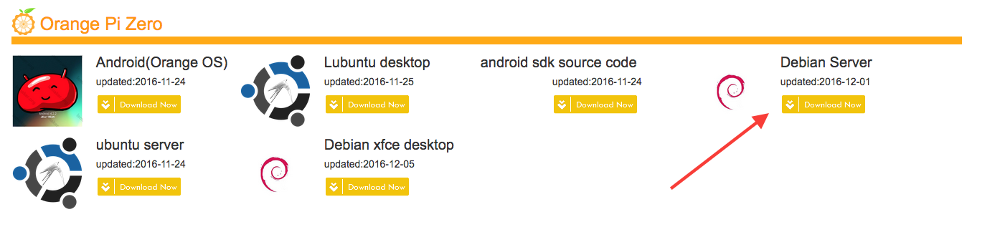
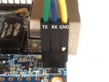
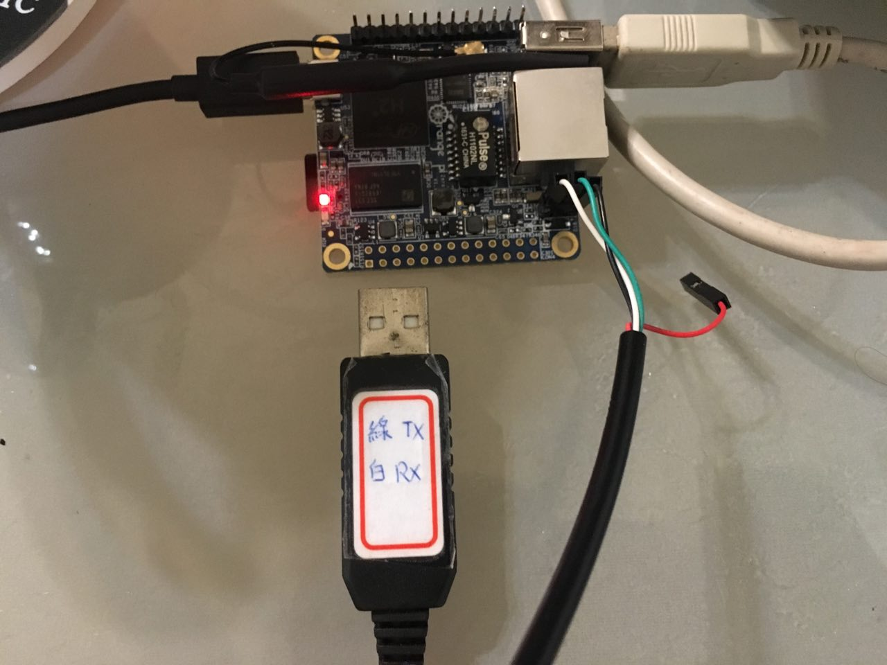
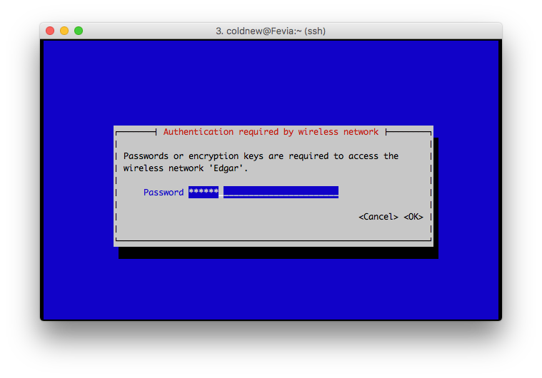
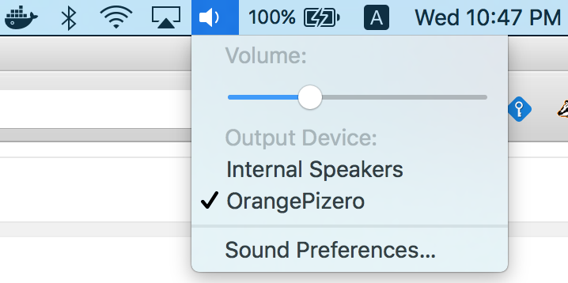
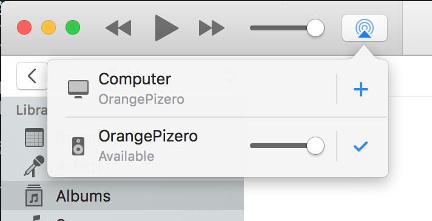

最近突然又想自己架設個簡單的 AirPlay 播放器，好透過 wifi 遠端播放我的 iPhone 或是 MacBook 上面的音樂。
剛好手邊的單板電腦都已經有各自的用途，於是便來找一片新的板子，最後鎖定了 Orange Pi Zero 這片開發板 (我選的是記憶體為 256 MB 的版本)。
會選這片的原因，主要是包含運費後他最便宜(大約 NT 362 元)，剩下要自己準備的則是: USB 電源、USB 手機充電線、8GB MicroSD 卡。
這邊就來紀錄一下我怎樣進行設定的。
下載 Image
首先連線到 http://www.orangepi.org/downloadresources/ ，取得你要用的 Image。由於我只是要用於文字介面，因此選擇 Debian Server 。

下載好 Image 並解壓縮後，可以直接透過 dd 命令將其燒錄到 SD 卡 (假設 SD 卡設備為: /dev/sdc )
coldnew@gentoo ~ $ sudo dd if=debian_server_For_OrangePizero_v0_9_2.img of=/dev/sdc bs=1m
連接 UART
將 SD 卡插上後，我會先透過 USB 轉 TTL 的轉接線來登入終端介面
從 Xunlong Orange Pi Zero 上面可以看到 Orange Pi Zero 的腳位是這樣定義的:

因此我們接線的時候，要把 USB 轉 TTL 線上面的 TX 接到 Orange Pi Zero 的 RX, TTL 線上面的 RX 接到 Orange Pi Zero 的 TX:

如果接上去後，開機沒任何訊息的話，可以試著把 TX 和 RX 線對調，看看是不是接錯了。
預設帳號密碼
Orange Pi Zero 預設的帳號密碼是這樣的:
- 帳號: root
- 密碼: orangepi
不要輸入錯誤進可以進去啦
Debian GNU/Linux 8 OrangePizero ttyS0 OrangePizero login: root Password:
擴充檔案系統大小
進入到系統的第一步，當然就是擴充 SD 卡的空間了
root@OrangePizero:~# fs_resize Disk /dev/mmcblk0: 7.4 GiB, 7969177600 bytes, 15564800 sectors /dev/mmcblk0p1 40960 172031 131072 64M b W95 FAT32 /dev/mmcblk0p2 172032 2113536 1941505 948M 83 Linux Max block: 15563776 Part end: 2113536 Part start: 172032 WARNING: Do you want to resize "/dev/mmcblk0p2" (y/N)? y PARTITION RESIZED. ********************************************* Rootfs Extended. Please REBOOT to take effect *********************************************
好了後，我們就可以來進行網路設定，你也可以先接上網路線，然後更新套件。
設定 wifi
我自己對於 wifi 的設定，一直都是習慣使用 NetworkManager 來進行的。因此在這邊先啟動 NetworkManager:
root@OrangePizero:~# systemctl start NetworkManager root@OrangePizero:~# systemctl enable NetworkManager
另外，由於 Orange Pi Zero 有兩個 wifi 設備，一個是 p2p0，另外一個是 wlan1
root@OrangePizero:~# nmcli dev DEVICE TYPE STATE CONNECTION eth0 ethernet connected eth0 p2p0 wifi unmanaged -- gre0 gre unmanaged -- lo loopback unmanaged -- wlan1 wifi unmanaged -- ip6tnl0 unknown unmanaged -- sit0 unknown unmanaged -- tunl0 unknown unmanaged --
由於 NetworkManager 預設會先去抓 p2p0 (按照字母排列)，因此我會設定成讓 NetworkManager 忽略 p2p0 這個設備，避免設定 wifi 變得麻煩。
編輯 /etc/NetworkManager/NetworkManager.conf ，加入以下資訊:
[main] plugins=ifupdown,keyfile [ifupdown] managed=true [keyfile] unmanaged-devices=interface-name:p2p0
好了後，重新啟動 NetworkManager
root@OrangePizero:~# systemctl restart NetworkManager
這樣我們就可以列出我們可以連線的無線網路:
root@OrangePizero:~# nmcli dev wifi list * SSID MODE CHAN RATE SIGNAL BARS SECURITY Edgar Infra 10 54 Mbit/s 100 ▂▄▆█ WPA1 WPA2 AUSTIN&FAY Infra 6 54 Mbit/s 45 ▂▄__ WPA1 WPA2 75226490 Infra 1 54 Mbit/s 35 ▂▄__ WPA2 2.4aaaaaaa Infra 4 54 Mbit/s 34 ▂▄__ WPA1 WPA2 RT-N16 Infra 6 54 Mbit/s 29 ▂___ WPA2 a89565282 Infra 1 54 Mbit/s 25 ▂___ WPA1 WPA2 dlink Infra 11 54 Mbit/s 20 ▂___ WPA1 WPA2 mat Infra 3 54 Mbit/s 22 ▂___ WPA1
假設我們要連接的 ESSID 為 Edgar，則接下來使用以下命令進行連接
root@OrangePizero:~# nmtui-connect Edgar
你會看到出現一個輸入密碼的視窗，輸入進去後應該就可以正常連上網路了

如果你想要一個指令就完成這個動作，你可以使用下面的命令 (替換 <essid> 和 <password>)
root@OrangePizero:~# nmcli dev wifi connect <essid> password <password>
這樣我們就完成無線網路的連接。
設定 avahi-daemon
編譯並安裝 shairport-sync
首先，我們要安裝一些軟體來幫助我們編譯並安裝 Shairport。
root@OrangePizero:~# apt-get install build-essential git autoconf libtool \ libdaemon-dev libasound2-dev libpopt-dev libconfig-dev \ avahi-daemon libavahi-client-dev \ libssl-dev
該裝的軟體都裝完以後，我們就可以下載最新的 shairport-sync 程式碼並安裝到系統內。
git clone https://github.com/mikebrady/shairport-sync.git
cd shairport-sync && autoreconf -i -f
接下來就是依照 shairport-sync 的 README 進行設置，我是設定了這些參數
./configure \ --with-alsa --with-stdout --with-pipe --with-avahi \ --with-ssl=openssl --with-metadata --with-systemd
接下來將整個程式安裝到系統中
root@OrangePizero:~/shairport-sync# make install
因為在前面的參數我是設定為給 systemd 的使用者使用，因此需要增加使用者與群組
root@OrangePizero:~# groupadd -r shairport-sync root@OrangePizero:~# useradd -r -M -g shairport-sync -s /usr/bin/nologin -G audio shairport-sync
接著加入到 systemd 開機設定中，並啟用 shairport-sync 服務
root@OrangePizero:~# systemctl enable shairport-sync root@OrangePizero:~# systemctl start shairport-sync
完成後，來設定輸出設備，這邊我採用的是 USB DAC。
設定 USB DAC
我自己播放音樂的時候，都是透過 USB DAC 來進行播放的 (這樣音質較好)，因此要多進行一些步驟，讓 Orange Pi Zero 可以透過 USB 音效卡輸出。
載入需要的驅動
正常來講，我們只要載入了 snd_usb_audio 這個驅動，就可以讓 ALSA 識別 USB 音效卡。
不過……
root@OrangePizero:/lib/modules# modprobe snd_usb_audio modprobe: ERROR: ../libkmod/libkmod.c:557 kmod_search_moddep() could not open moddep file '/lib/modules/3.4.39/modules.dep.bin'
好吧，有東西從缺，改用 insmod 的方式來載入。我們在 /etc/rc.local 加上這些東西
insmod /lib/modules/3.4.39_zero/snd-usbmidi-lib.ko insmod /lib/modules/3.4.39_zero/snd-hwdep.ko insmod /lib/modules/3.4.39_zero/snd-usb-audio.ko
這樣重開機後，你可以透過 lsmod 確認需要用到的驅動是否有真的被載入:
root@OrangePizero:~# lsmod Module Size Used by snd_usb_audio 79205 2 snd_hwdep 5337 1 snd_usb_audio snd_usbmidi_lib 17391 1 snd_usb_audio xradio_wlan 230792 0
如果上面列出的模組有缺的話，可以透過以下命令檢查是否 /etc/rc.local 有哪個地方出錯
root@OrangePizero:~# systemctl status rc-local ● rc-local.service - /etc/rc.local Compatibility Loaded: loaded (/lib/systemd/system/rc-local.service; static) Active: active (exited) since Thu 1970-01-01 00:38:08 UTC; 47 years 3 months ago Jan 01 00:38:07 OrangePizero systemd[1]: Starting /etc/rc.local Compatibility... Jan 01 00:38:08 OrangePizero systemd[1]: Started /etc/rc.local Compatibility.
確認該被載入的驅動有正常載入後，我們來指定 ALSA 預設得輸出設備。
指定 ALSA 輸出設備
那我們要怎樣讓 ALSA 知道我們指定的 USB DAC 的輸出位置呢?
首先先列出可以使用的音效卡資訊:
root@OrangePizero:~# cat /proc/asound/cards
0 [audiocodec ]: audiocodec - audiocodec
audiocodec
1 [sndhdmi ]: sndhdmi - sndhdmi
sndhdmi
2 [Set ]: USB-Audio - C-Media USB Headphone Set
C-Media USB Headphone Set at usb-sunxi-ohci-1, full speed
找到編號是 2 後，我們就可以編輯 /etc/asound.conf 指定預設的 alsa 設備：
defaults.pcm.card 2 defaults.ctl.card 2
這樣子播放的時候，ALSA 就會選用 USB-Audio - C-Media USB Headphone Set 這個設備進行播放。
在 macOS 下透過 AirPlay 播放
所有設定完成後，只要你的 macOS 和你的 AirPlay 設備在同一個網域，你就可以這樣找到他:

或是透過 iTunes 選擇設備:

試試看，播放聲音的時候，聲音是不是透過連接在 Orange Pi 上面的 USB DAC 送出來的 :)